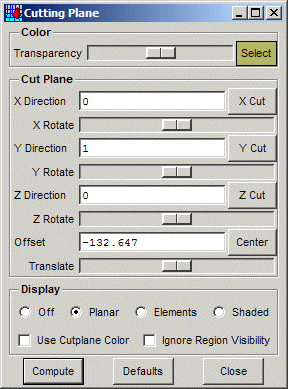
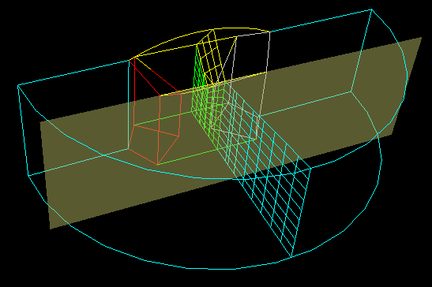

|  |  |
This panel defines and controls the display of a cutting plane. The first section, Color, defines the color and transparency of the cutting plane positioner, as shown in the image to the right.
The second section, Cut Plane, controls the location of the cutting plane. The X, Y and Z Directions are the components of the cutting plane normal, and the Offset is the distance along the normal. The X, Y and Z Cut buttons will initialize the cutting plane normal to the specified axis, and in the middle of the bounding box. The X, Y and Z Rotate sliders will rotate the plane about the corresponding axis, and the Translate slider translates the plane along it's current normal. Lastly, the Center button will center the plane in the middle of the bounding box. The cutting plane is clipped the the bounding box, which is either that of the visible objects or the entire model if the Ignore Region Visibility button is checked (see below).
In the image to the right, the cutting plane was first located by using the X Cut button and computed, then repositioned using the Y Cut button. Entering Compute now will remove the previous cutting plane results, and recompute it at the new location.
The last section, Display, controls how the cut elements will be displayed. Off disables display of the cut elements; Planar displays the intersect of the cut elements as lines in the plane; and Elements and Shaded display the cut elements as either a wireframe or shaded surfaces. The cut elements will either be colored by the region colors or by the cutplane positioner color, depending on whether Use Cutplane Color is enabled. If Ignore Region Visibility is enabled, then all elements will be intersected and displayed, regardless of whether they are actually visible or not.
When the cutting plane has been positioned, the Compute button or the Enter key will compute and display the cutting plane. The Defaults button will reset everything to the defaults, and the Close button will close the panel and remove the cut plane.